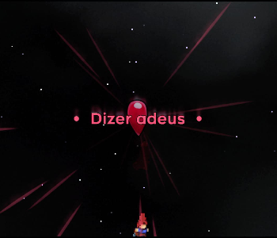
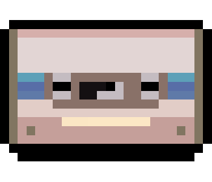
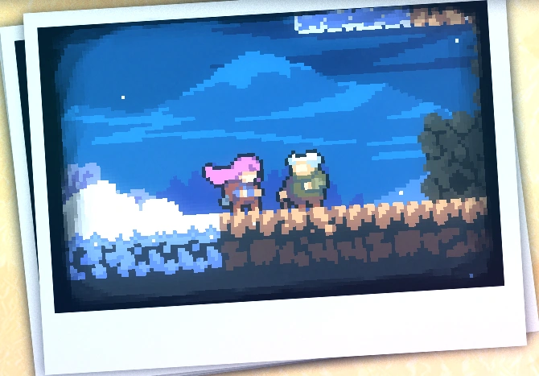
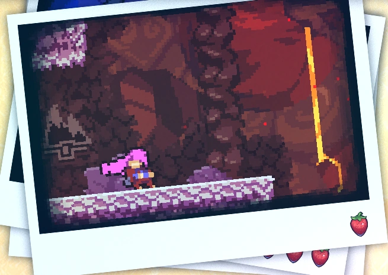
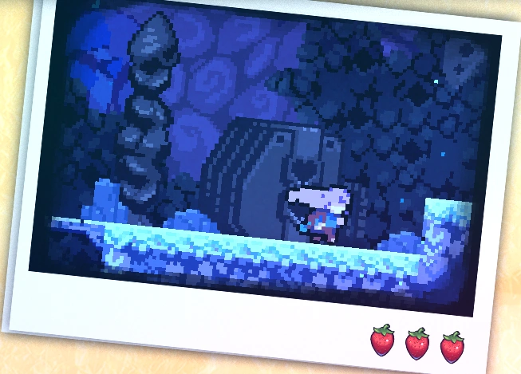
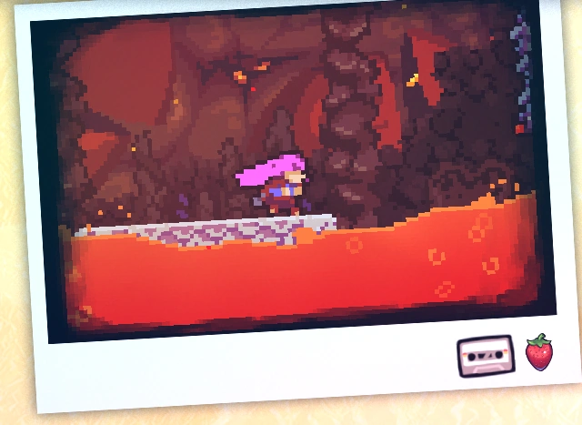

Chapter 8: Core
The Core is the eighth chapter of Celeste. This chapter introduces a new unique mechanic: the dash is no longer recharged when the player steps on a platform or the ground, and it can be recovered after passing through a room transition or by picking up a dash crystal.
Mechanics
Plot
Madeline returns to the mountain about a year later to explore the secrets of the mountain, which were told to her by the Old Woman on the phone. Madeline is informed that the center of the mountain has extreme power that will affect her abilities. She understands this when she can't use her second dash and can't talk to Badeline either. When the player hasn't collected at least 4 crystal hearts, the old woman will tell Madeline that she may not be ready to enter the core. If the player has at least 4 crystal hearts, Madeline will enter the Core to search for the heart of the mountain. After a challenging ordeal, Madeline will enter a dark room that she finds familiar. In the end, the final Crystal Heart of this level will appear and can be collected.
Diálogos
Collectibles
Crystal Heart:
Chapter 8's Crystal Heart is acquired in the fourth sub-chapter at the end of the level. To complete the chapter, it is necessary to collect the Crystal Heart.
Cassette Tape:
Chapter 8's cassette tape is acquired in the fourth sub-chapter in the second-to-last room of the level. It is necessary to collect the cassette tape to proceed to the next room.
Strawberries:
• Golden Strawberry:
Obtained after completing the level while holding the golden strawberry. Can only be obtained after completing Chapter 8's B-Side.
• Red Strawberries:
Strawberry 1: Red Strawberry:
Strawberry 2: Red Strawberry:
Strawberry 3: Winged Red Strawberry:
Strawberry 4: Red Strawberry:
Strawberry 5: Red Strawberry:
Subchapters
Core has 4 subchapters:
Start
Into the Core
Hot and Cold
Heart of the Mountain
